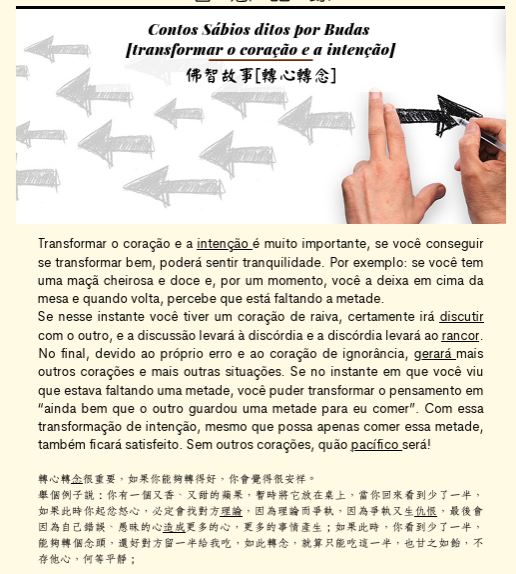
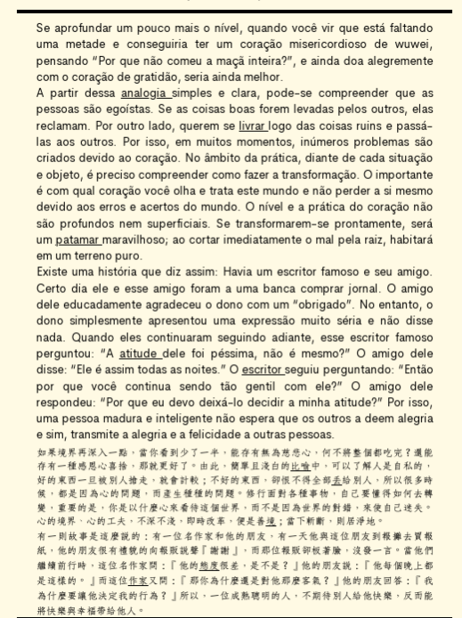

心念之境
看見情緒看見第一念理解真正需求找到調節方式重新選擇
先看見自己，再決定怎麼做。
八識 × 覺察 × 自我調節 × 葡文翻譯
有些反應來得很快。
這一次，我們先不急著判斷，
而是看看自己的心，
是怎麼一步一步走到行動的。
姓名不會儲存在瀏覽器；寄送失敗不影響進入課程。
先看見自己，再決定怎麼做。
準備進入心念之境先看見自己，再決定怎麼做。
先理解，再決定怎麼翻。
一場從日常情緒出發、穿越八識之門，最後抵達自然葡文的互動旅程。每一步，都練習不跟著第一個反應走。
先閱讀這兩頁中葡雙語教材，再帶著文章中的「轉念」概念進入闖關。


完成目前節點，下一站才會亮起。
哪一句最接近你腦中浮現的第一反應？
轉念之後，下一步應該是什麼？
你最可能的第一反應是？
哪一個最能代表真正的積極性？
依序點開五個節點，看看一個外在事件如何走進心裡，最後成為行動。
積極不是沒有情緒，而是有情緒時仍知道下一步可以做什麼。
哪一個版本的時間關係比較自然？
這些逗號自然嗎？
先不要套用固定規則。請根據日常語境，把下面八個詞翻成你覺得自然的葡文。
同樣都有中文字「心」，到了葡文不一定會出現 coração。
下面保留教材目前使用的葡文。它們是比較與討論的材料，不是直接宣告的「正確答案」。
和剛才的「專心、小心、開心、點心」相比，你有沒有發現這篇文章刻意保留了很多 coração？
你認為為什麼？
不是「看到心就翻 coração」，
也不是「看到心就不能翻 coração」。
真正要先判斷的是：
翻譯不只是換詞，
也要用心體會、解讀，
再決定怎麼表達。
哪一個 gerúndio 比較自然？
先寫下你的修改版本。
遊戲先停在這裡。圍成一桌，把剛才的選擇帶回自己的生活。這裡沒有標準答案；請選擇、說明理由，再聽聽別人的視角。
剛才的情境中，哪一種反應最接近你平常真正的反應？
點選即可加入一次班級現場投票。
遊戲裡有沒有哪一題，你知道「比較好的答案」是什麼，但現實中不一定做得到？
連回第八識：有些反應不是我們不知道，而是已經變成習慣。
逐句分類，再看看「為什麼」。參考方向是討論起點，不是給人貼標籤。
每一種選擇都可能受情境影響。先選分類，再請小組說明判斷理由。
「算了，不要計較。」
但心裡一直生氣。
「我現在很生氣，先等一下再談。」
「沒事沒事。」
但問題每次都重複發生。
「我理解對方可能有原因，
但我還是需要把界線說清楚。」
哪一個人最積極？
點擊流程中的每一步，用問題檢查自己的反應。
八識讓我們看見：
我是怎麼反應的。
轉念讓我們看見：
我不一定要跟著第一個念頭走。
積極性讓我們問：
現在，我可以做什麼？